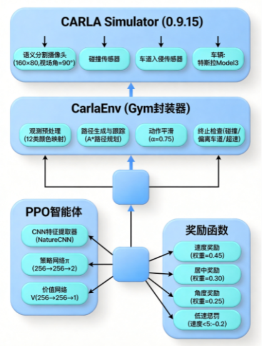
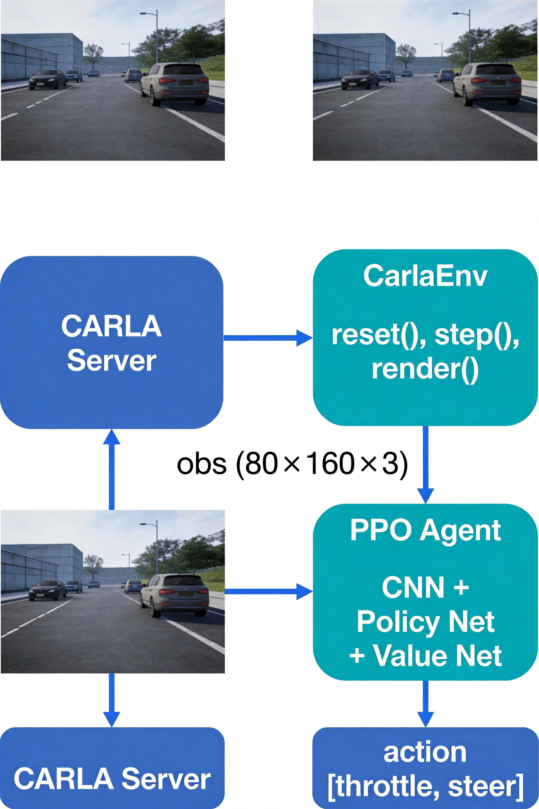
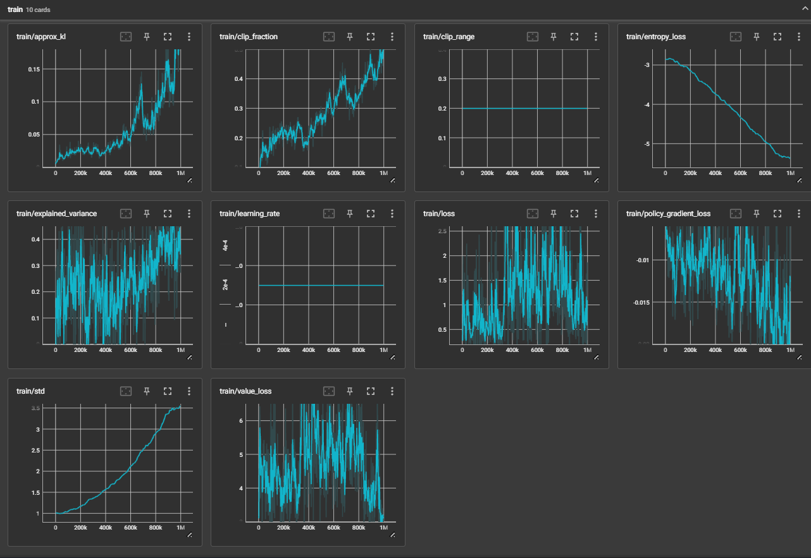
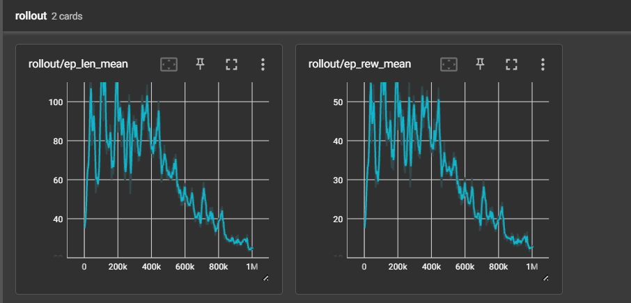
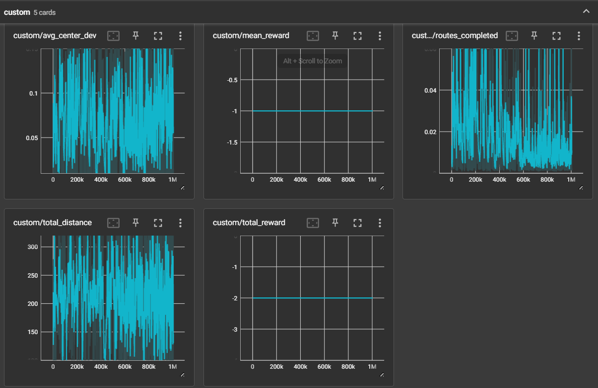
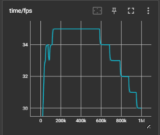
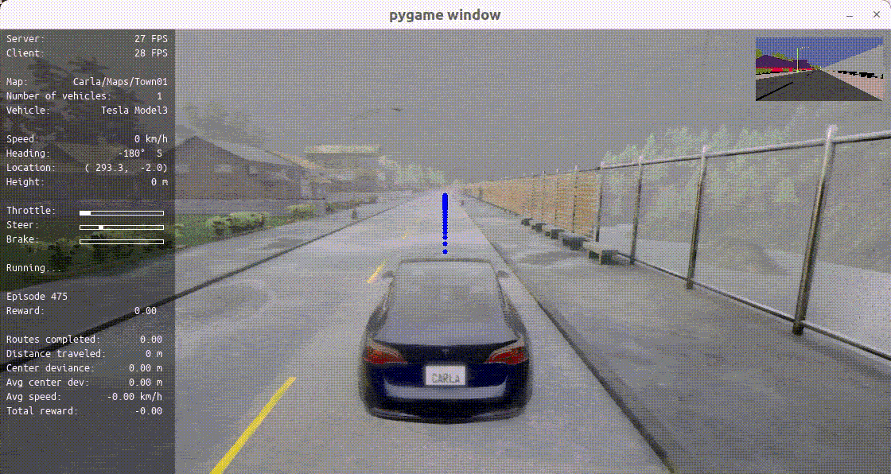

基于 PPO 算法的 Carla 自动驾驶系统
目录
项目简介
本项目基于 CARLA 0.9.15 仿真器，使用 PPO (Proximal Policy Optimization) 强化学习算法训练自动驾驶智能体。智能体通过语义分割传感器感知环境，学习控制油门和方向盘，实现沿随机生成路径的自主行驶。
核心问题与贡献
初始训练时，智能体严重陷入局部最优策略——完全不动，ep_rew_mean 始终在 0 附近波动，ep_len_mean 极短。经过深入排查和分析，发现原始奖励函数的设计存在多个致命缺陷：
- 乘法组合导致梯度消失：
reward = speed × centering × angle，只要任一维度接近 0，整体奖励就被"抹杀"，智能体难以从多个维度同时获得有效梯度信号 - 角度计算跨零点 bug：车辆朝向 1°，waypoint 朝向 359°，实际夹角仅 2°，但
abs(359-1) = 358°，导致角度因子错误归零 - 低速计时器累积 bug：
low_speed_timer只增不减，智能体偶尔减速也会被误判为"连续低速"而终止 - 终止惩罚固定：存活 60 步和 5 步终止都给 -1，智能体没有动力多存活
通过系统性优化奖励函数设计——乘法改加权求和、修复 bug、加入低速惩罚机制、增加 waypoint 前进奖励——训练从无法收敛提升至 ep_rew_mean = 30.1，智能体能够沿路径行驶约 60 步。
项目背景
CARLA (Car Learning to Act) 是一个开源的高保真自动驾驶仿真平台，由 Intel 并行计算实验室开发，基于 Unreal Engine 4 构建。它提供了丰富的城市环境、多种车辆模型、多种传感器（RGB 相机、语义分割相机、深度相机、激光雷达、雷达等），以及完整的 Python/C++ API，是目前学术界最常用的自动驾驶强化学习研究平台之一。
强化学习在自动驾驶中的挑战
将强化学习应用于自动驾驶任务面临以下核心挑战：
1. 高维连续状态空间
观测是像素级图像（本项目为 160×80×3 的语义分割图），需要 CNN 进行特征提取。相比传统的低维状态空间（如速度、位置等），图像观测的维度极高，策略网络需要同时学习感知和决策。
2. 连续动作空间
油门和转向都是连续值，无法使用 Q-Learning 等离散动作算法，需要策略梯度方法（如 PPO、SAC、DDPG）。连续动作空间的探索更加困难，策略更新需要谨慎控制步长。
3. 稀疏延迟奖励
完成一个完整路线需要上千步交互，而成功信号只在路线终点才出现。中间过程的奖励信号质量直接决定了训练能否收敛——这正是本项目的核心问题。
4. 安全约束与探索困境
碰撞、越线都会导致立即终止，探索空间受限。智能体如果过于保守（选择"不动"），虽然不会碰撞，但也永远学不到有效策略。
本项目的定位
本项目聚焦于 CARLA Town01 地图下的单车道循迹任务（Lane Following），使用语义分割观测 + 连续动作空间 + PPO 算法，重点解决奖励函数设计问题。这是一个相对基础但核心的自动驾驶任务，其奖励设计经验可以迁移到更复杂的场景。
系统架构
整体架构图

交互流程图
数据流详解
整个系统的数据流可以分为以下五个阶段：
阶段一：观测采集
语义分割相机（前置，绑定在车辆引擎盖上方，FOV=90°）每帧产生 160×80 的语义标签图。CARLA 的语义分割将场景分为 12 个类别（道路、人行道、车辆、行人、交通标志等），每个像素存储的是类别 ID 而非 RGB 值。
阶段二：颜色映射
get_semantic_image() 方法将类别 ID 映射为可视化颜色，例如道路(128,64,128)、车辆(0,0,255)、人行道(244,35,232)。这个映射参考了 Cityscapes 数据集的配色方案，使输入图像具有更好的语义区分度。
阶段三：策略推理
PPO 策略网络使用 NatureCNN 架构（3层卷积 + 全连接层）提取图像特征，然后分别通过策略头和价值观头输出动作概率和状态价值。策略头输出 [throttle, steer] 的均值，方差由 log_std 参数控制。
阶段四：动作执行
原始动作经过平滑处理：smooth_action(prev, cur, 0.75) = 0.75 * prev + 0.25 * cur，避免动作突变导致车辆抖动。平滑后的控制量通过 VehicleControl 应用到仿真器中的车辆。
阶段五：奖励计算
根据车辆当前状态（速度、偏移、角度）计算奖励，使用加权求和方式。同时检查终止条件（碰撞、越线、超速、低速），若终止则给予惩罚。
硬件与开发环境
硬件要求
| 组件 | 推荐配置 | 最低配置 | 说明 |
|---|---|---|---|
| CPU | Intel i5 / AMD Ryzen 5 | Intel i3 / AMD Ryzen 3 | CARLA 仿真器 CPU 开销大 |
| GPU | NVIDIA RTX 4050 (6GB) | NVIDIA GTX 1650 (4GB) | CARLA + PyTorch 共享 GPU |
| 内存 | 16GB | 8GB | CARLA 本身需要 4~6GB |
| 存储 | 50GB SSD | 30GB HDD | CARLA 安装包约 20GB |
软件环境
| 依赖 | 版本 | 说明 |
|---|---|---|
| 操作系统 | Windows 10 | Linux 亦可，但本文档以 Windows 为主 |
| CARLA | 0.9.15 | 需从官网下载，非 pip 安装 |
| Python | 3.10 | 建议使用 Anaconda 管理 |
| CUDA | 11.8+ | GPU 训练必需 |
| PyTorch | 2.2.1 | 需匹配 CUDA 版本 |
| Stable-Baselines3 | 2.2.1 | 强化学习算法库 |
| Gym | 0.26.2 | 环境接口标准 |
| Pygame | 2.5.2 | 仿真器可视化渲染 |
| Conda 环境 | carla_rl | 项目专用虚拟环境 |
安装步骤
1. 下载并安装 CARLA 仿真器
# 从 CARLA 官方 GitHub Release 下载 0.9.15 版本
# https://github.com/carla-simulator/carla/releases/tag/0.9.15
# 解压到指定目录（Windows 示例）
# D:\CARLA_0.9.15\
# 测试运行（带 GUI）
D:\CARLA_0.9.15\CarlaUE4.exe
# 训练时建议使用无渲染模式
D:\CARLA_0.9.15\CarlaUE4.exe -RenderOffScreen -quality-level=Low
常见问题：
| 问题 | 原因 | 解决方案 |
|---|---|---|
| 首次启动黑屏 | CARLA 在缓存着色器 | 等待 3~5 分钟，属于正常现象 |
| 启动崩溃 | GPU 驱动版本过低 | 更新 NVIDIA 驱动至最新 |
| 端口被占用 | 已有 CARLA 实例在运行 | 关闭旧进程或使用 --carla-rpc-port=2001 |
| 帧率过低 | 显存不足 | 降低 --quality-level 或启用 -opengl |
2. 安装 CARLA Python API
# CARLA Python API 需手动安装
# 进入 CARLA 安装目录下的 PythonAPI
cd D:\CARLA_0.9.15\PythonAPI\carla\dist\
# 根据你的 Python 版本选择对应的 whl 文件
pip install carla-0.9.15-cp310-cp310-win_amd64.whl
3. 克隆本项目并配置环境
# 克隆仓库
git clone https://github.com/OpenHUTB/nn.git
cd nn
# 创建 Conda 环境
conda create -n carla_rl python=3.10 -y
conda activate carla_rl
# 安装 PyTorch（根据 CUDA 版本选择）
# CUDA 11.8
pip install torch==2.2.1 torchvision==0.17.1 --index-url https://download.pytorch.org/whl/cu118
# CUDA 12.1
pip install torch==2.2.1 torchvision==0.17.1 --index-url https://download.pytorch.org/whl/cu121
# 安装项目依赖
pip install -r src/auto_drive_system/requirements.txt
4. 验证安装
# 验证 CARLA Python API
python -c "import carla; print(f'CARLA version: {carla.__version__}')"
# 验证 PyTorch CUDA
python -c "import torch; print(f'CUDA available: {torch.cuda.is_available()}')"
# 验证 Stable-Baselines3
python -c "import stable_baselines3; print(f'SB3 version: {stable_baselines3.__version__}')"
目录结构
src/auto_drive_system/
├── agent/ # 智能体模块
│ ├── __init__.py # 包初始化文件
│ ├── env.py # CARLA 环境封装（Gym 接口）
│ │ # - 语义分割传感器管理
│ │ # - 碰撞/车道入侵检测
│ │ # - 路线生成与追踪
│ │ # - Pygame 可视化渲染
│ └── rewards.py # 奖励函数定义
│ # - reward_fn5：加权求和式
│ # - reward_fn_waypoints：前进奖励式
├── carla_utils/ # CARLA 工具函数
│ # - 传感器数据转换
│ # - 车辆状态查询
├── core_rl/ # RL 核心组件
│ # - actions.py：动作空间定义（连续2维）
│ # - observation.py：观测空间定义
├── navigation/ # 导航模块
│ # - 路径规划（A* 算法）
│ # - waypoint 管理
├── tools/ # 辅助工具
├── utilities/ # 工具类
│ # - graphics.py：HUD 显示
│ # - planner.py：路线规划
│ # - utils.py：几何计算工具
├── config.py # 配置文件
│ # - 算法参数（PPO/SAC/DDPG）
│ # - 奖励参数
│ # - 观测/动作空间配置
├── train.py # 训练入口脚本
│ # - 命令行参数解析
│ # - 模型初始化与训练循环
│ # - 检查点保存与日志记录
├── evaluate.py # 评估脚本
│ # - 加载模型可视化运行
│ # - 1000步连续推理
├── test.py # 快速测试脚本
│ # - 验证模型输出格式
│ # - 确定性/随机策略对比
├── carla_da_dynamic.py # 动态数据增强
├── carla_da_dynamic_with_camera.py # 摄像头动态数据增强
├── carla_da_static.py # 静态数据增强
├── utils.py # 通用工具函数
│ # - HParamCallback：超参数记录
│ # - TensorboardCallback：自定义指标
│ # - VideoRecorder：训练视频录制
│ # - lr_schedule：学习率调度
│ # - HistoryWrapperObsDict：观测历史
│ # - FrameSkip：跳帧包装器
└── requirements.txt # Python 依赖列表
核心模块详解
环境封装 (env.py)
CarlaEnv 是整个项目的核心，继承自 gym.Env，将 CARLA 仿真器封装为标准的 Gym 环境。它管理着仿真器中的所有实体：车辆、传感器、路线、HUD 等。
初始化流程
client = carla.Client] B --> C[加载地图 Town01
client.load_world] C --> D[设置同步模式
synchronous_mode=True] D --> E[生成车辆 Tesla Model3
spawn_actor] E --> F[挂载碰撞传感器
sensor.other.collision] F --> G[挂载车道入侵传感器
sensor.other.lane_invasion] G --> H{观测类型?} H -->|semantic| I[语义分割相机
sensor.camera.semantic_segmentation] H -->|rgb| J[RGB 相机
sensor.camera.rgb] I --> K[设置分辨率 160×80
FOV=90°] J --> K K --> L[挂载观察者相机
1120×560 FOV=100°] L --> M[初始化 Pygame 渲染] M --> N[调用 reset 生成首条路线]
关键方法说明
| 方法 | 功能 | 返回值 |
|---|---|---|
reset() |
重置环境，生成新路线，返回初始观测 | obs (80×160×3) |
step(action) |
执行一步交互，返回 (obs, reward, done, info) | tuple |
generate_route() |
随机选择起终点，A* 规划路线 | None |
render() |
Pygame 渲染 HUD + 路线 + 观测图像 | None |
close() |
销毁所有 Actor，关闭 Pygame | None |
get_vehicle_lon_speed() |
获取车辆纵向速度 (km/h) | float |
get_semantic_image() |
语义标签→可视化颜色映射 | ndarray |
终止条件
环境在以下任一条件满足时终止当前 episode：
| 条件 | 说明 | 检测方式 |
|---|---|---|
| 碰撞 | 非路面碰撞（撞墙、撞车等） | 碰撞传感器回调 |
| 越线 | 压到实线/虚线 | 车道入侵传感器回调 |
| 偏离车道 | 距离车道中心 > max_distance (2.0m) | 每步计算 |
| 超速 | 速度 > max_speed (35 km/h) | 每步计算 |
| 低速停滞 | 连续低速 > 3 秒（速度 < 3 km/h） | 低速计时器 |
| 行驶超距 | 总行驶距离 > 3000m | 每步累计 |
| 路线完成 | 到达路线终点 | waypoint 索引检查 |
语义分割颜色映射
get_semantic_image() 中定义了 12 个类别的颜色映射，参考 Cityscapes 数据集：
| 类别 ID | 类别名称 | 颜色 (RGB) | 说明 |
|---|---|---|---|
| 0 | Unlabeled | (0, 0, 0) | 黑色背景 |
| 1 | Buildings | (70, 70, 70) | 灰色建筑 |
| 2 | Fences | (190, 153, 153) | 浅粉色围栏 |
| 3 | Other | (72, 0, 90) | 紫色其他 |
| 4 | Pedestrians | (220, 20, 60) | 红色行人 |
| 5 | Poles | (153, 153, 153) | 灰色杆子 |
| 6 | RoadLines | (157, 234, 50) | 绿色道路标线 |
| 7 | Roads | (128, 64, 128) | 紫色道路 |
| 8 | Sidewalks | (244, 35, 232) | 粉色人行道 |
| 9 | Vegetation | (107, 142, 35) | 绿色植被 |
| 10 | Vehicles | (0, 0, 255) | 蓝色车辆 |
| 11 | Walls | (102, 102, 156) | 灰蓝色墙 |
| 12 | TrafficSigns | (220, 220, 0) | 黄色交通标志 |
奖励函数 (rewards.py)
奖励函数模块定义了两种奖励方案：reward_fn5 和 reward_fn_waypoints，均通过 create_reward_fn() 高阶函数包装，统一处理终止条件和惩罚逻辑。
create_reward_fn 包装器
def create_reward_fn(reward_fn):
"""包装器：统一处理终止条件判断 + 惩罚逻辑"""
def func(env):
terminal_reason = "Running..."
if early_stop:
# 检查低速、偏移、超速
...
if not env.terminate:
reward = reward_fn(env) # 调用具体奖励函数
else:
reward = -1.0 # 统一终止惩罚
return reward
return func
包装器的职责： - 统一管理 early_stop 终止条件 - 终止时给予固定惩罚 (-1.0) - 记录终止原因（"Vehicle stopped" / "Off-track" / "Too fast"） - 成功完成路线时打印日志
配置管理 (config.py)
配置文件采用字典嵌套结构，支持多算法、多奖励函数的灵活切换。
算法参数配置
除了默认的 PPO，还预定义了 SAC、DDPG 等算法的参数（当前未启用）：
| 算法 | 关键参数 | 状态 |
|---|---|---|
| PPO | lr=3e-4, n_steps=2048, net_arch=[256,256] | 默认启用 |
| SAC | lr=5e-4, buffer=300K, batch=256, use_sde=True | 预定义，未启用 |
| DDPG | lr=5e-4, buffer=200K, action_noise=0.5 | 预定义，未启用 |
奖励参数配置
当前使用 reward_fn_5_best 配置，与默认配置 reward_fn_5_default 的主要区别：
| 参数 | 默认 | 最佳 | 说明 |
|---|---|---|---|
| max_distance | 3.0 m | 2.0 m | 更严格的偏移阈值 |
| max_std_center_lane | 0.4 | 0.35 | 更严格的偏离标准差阈值 |
| early_stop | True | True | 相同 |
训练脚本 (train.py)
训练脚本负责整个训练流程的管理，包括参数解析、环境创建、模型初始化、训练循环和检查点保存。
训练流程

模型命名规则
训练产生的模型和日志保存在 tensorboard/ 目录下，命名格式为：
tensorboard/
└── PPO_{timestamp}_id{config_id}/
├── config.json # 训练配置快照
├── model_100000_steps.zip # 检查点模型
├── model_200000_steps.zip
├── ...
├── model_1000000_steps.zip # 最终模型
├── events.out.tfevents.* # TensorBoard 事件文件
└── progress.csv # 训练进度 CSV
继续训练（微调）时使用 --reload_model 参数，模型后缀自动变为 _finetuning。
工具函数 (utils.py)
工具函数模块提供了训练过程中常用的回调类、包装器和辅助函数。
| 类/函数 | 功能 | 使用场景 |
|---|---|---|
HParamCallback |
训练开始时记录超参数到 TensorBoard | 训练回调 |
TensorboardCallback |
每个 episode 结束时记录自定义指标 | 训练回调 |
VideoRecorder |
录制训练过程视频 (XVID 格式) | 可视化 |
VideoRecorderCallback |
每隔 N 帧录制一帧，训练结束自动释放 | 训练回调 |
lr_schedule |
指数衰减学习率调度函数 | SAC/DDPG 配置 |
HistoryWrapperObsDict |
将历史观测和动作拼接为当前观测 | 增强时序信息 |
FrameSkip |
跳帧包装器，重复执行同一动作 | 加速仿真 |
write_json |
将配置字典保存为 JSON | 训练配置记录 |
parse_wrapper_class |
从字符串解析包装器类 | 配置化包装器 |
TensorboardCallback 自定义指标
每个 episode 结束时，TensorboardCallback 会记录以下指标到 TensorBoard 的 custom/ 命名空间：
| 指标 | 含义 | 单位 |
|---|---|---|
custom/total_reward |
累积总奖励 | - |
custom/routes_completed |
完成的路线数 | 条 |
custom/total_distance |
总行驶距离 | m |
custom/avg_center_dev |
平均车道偏移 | m |
custom/avg_speed |
平均速度 | km/h |
custom/mean_reward |
每步平均奖励 | - |
使用方法
训练
# 1. 启动 CARLA 仿真器（终端 1，无渲染模式）
# Windows:
D:\CARLA_0.9.15\CarlaUE4.exe -RenderOffScreen
# Linux:
./CarlaUE4.sh -RenderOffScreen
# 2. 启动训练（终端 2，本地模式）
cd src/auto_drive_system
python train.py --host "localhost"
# 3. 指定参数训练（高级用法）
python train.py \
--host "localhost" \
--town Town01 \
--total_timesteps 2000000 \
--fps 15 \
--config "1" \
--no_render
# 4. 加载已有模型继续训练（微调）
python train.py \
--host "localhost" \
--reload_model "tensorboard/PPO_1779374743_id1/model_1000000_steps.zip"
训练参数
| 参数 | 类型 | 默认值 | 说明 |
|---|---|---|---|
--host |
str | 127.0.0.1 | CARLA 服务器 IP。本地训练用 localhost，双机训练用远程内网 IP |
--port |
int | 2000 | CARLA 服务器 TCP 端口。多实例训练时可修改 |
--town |
str | Town01 | 训练地图。可选 Town01~Town10HD |
--total_timesteps |
int | 1,000,000 | 总训练步数。推荐 100~200 万步 |
--reload_model |
str | None | 加载已有模型继续训练（路径到 .zip 文件） |
--fps |
int | 15 | 仿真帧率。越高越流畅但 GPU 开销大 |
--config |
str | 1 | 配置编号，对应 config.py 中的 CONFIGS 字典 |
--num_checkpoints |
int | 10 | 检查点保存数量，均匀分布在整个训练过程中 |
--no_render |
flag | False | 加上此标志关闭渲染，加速训练 |
配置说明
配置文件位于 config.py，采用字典嵌套结构。当前默认配置（config "1"）：
PPO 超参数：
| 参数 | 值 | 说明 | 调参建议 |
|---|---|---|---|
| learning_rate | 3e-4 | 学习率 | 太大(>1e-3)训练不稳定，太小(<1e-5)收敛极慢 |
| gamma | 0.98 | 折扣因子 | 0.95~0.99，越大越重视长期回报 |
| gae_lambda | 0.95 | GAE 参数 | 0.9~0.99，越大方差越低但偏差越高 |
| clip_range | 0.2 | PPO 裁剪范围 | 0.1~0.3，控制策略更新幅度 |
| ent_coef | 0.01 | 熵正则化系数 | 0.0~0.1，鼓励探索 |
| n_epochs | 5 | 每次更新的训练轮数 | 3~10，越大利用越充分但可能过拟合 |
| n_steps | 2048 | 每次收集的步数 | 1024~4096，越大梯度估计越准 |
| net_arch | [256, 256] | 策略/价值网络层数 | 小数据集[256,256]足够，大数据集可[512,512] |
观测与动作空间：
| 空间 | 类型 | 维度 | 范围 | 说明 |
|---|---|---|---|---|
| 观测空间 | Box | (80, 160, 3) | [0, 255] | 语义分割图像（经颜色映射） |
| 动作空间 | Box | (2,) | [-1, 1] | [throttle, steer] |
动作平滑：默认 action_smoothing=0.75，控制量更新公式为：
control = 0.75 × prev_control + 0.25 × new_action
这避免了动作突变导致的车辆抖动，但也降低了策略响应速度。追求训练速度时可以降低此值（如 0.5），追求行驶平滑时可以提高（如 0.9）。
评估与测试
# 评估脚本：加载训练好的模型，在仿真器中连续运行 1000 步
python evaluate.py
# 快速测试脚本：仅测试模型输出格式是否正确
python test.py
# test.py 输出示例：
# obs type: <class 'numpy.ndarray'>, shape: (80, 160, 3)
# obs min: 0.0, max: 255.0, mean: 127.3
# 确定性动作: [0.5, 0.0]
# 随机动作: [0.5, 0.0]
注意：
evaluate.py和test.py中的模型路径需根据实际训练输出修改。默认路径格式为tensorboard/PPO_{timestamp}_id1/model_1000000_steps.zip。
TensorBoard 监控
# 启动 TensorBoard（终端 3）
tensorboard --logdir=./tensorboard --port 6006
# 浏览器打开
# http://localhost:6006
TensorBoard 中的关键面板：
| 面板 | 内容 | 用途 |
|---|---|---|
| SCALARS - rollout/ | ep_rew_mean, ep_len_mean | 监控训练收敛情况 |
| SCALARS - train/ | value_loss, policy_gradient_loss | 监控优化过程 |
| SCALARS - custom/ | avg_speed, avg_center_dev | 监控驾驶质量 |
| HPARAMS | 超参数与指标关联 | 对比不同配置的效果 |
| IMAGES | 观测图像 | 检查输入是否正常 |
奖励函数优化
原始奖励函数的问题分析
原始奖励函数采用乘法组合：
reward = speed_reward * centering_factor * angle_factor
问题 1：乘法组合导致梯度消失
这是最致命的问题。考虑以下场景：
| 场景 | 速度因子 | 居中因子 | 角度因子 | 乘法结果 | 加权求和结果 |
|---|---|---|---|---|---|
| 速度适中，略偏 | 1.0 | 0.1 | 0.8 | 0.08 | 0.62 |
| 速度适中，略歪 | 1.0 | 0.8 | 0.1 | 0.08 | 0.67 |
| 三项都还行 | 0.6 | 0.5 | 0.5 | 0.15 | 0.545 |
| 一项差两项好 | 0.1 | 1.0 | 1.0 | 0.10 | 0.645 |

乘法组合下，只要有一个维度较差（如 0.1），整体奖励就会被严重拉低（0.08~0.10），智能体几乎得不到有效梯度信号来改善其他维度。而加权求和下，每个维度独立贡献，即使一个维度差，其他维度仍能提供正向梯度。
问题 2：角度计算跨零点 bug
# 原始代码
angle = abs(wayp_angle - veh_angle)
在 CARLA 中，朝向角 (yaw) 的范围是 [0°, 360°]。当车辆朝向 1°，waypoint 朝向 359° 时：
- 实际夹角：360° - 359° + 1° = 2°
- 原始计算：abs(359° - 1°) = 358°
结果：angle_factor = max(1 - 358/90, 0) = 0，角度因子完全归零。这在弯道场景中频繁出现，严重影响了训练效果。
问题 3：低速计时器累积 bug
# 原始代码
low_speed_timer += 1.0 / fps # 只增不减！
if low_speed_timer > 5.0 and speed < 1.0:
env.terminate = True
low_speed_timer 只增不减意味着：如果智能体在前 3 秒正常行驶后减速到 1 km/h 以下，low_speed_timer 已经累加到 3.0+，只需要再减速不到 2 秒就会被终止——而设计意图是"连续低速 5 秒才终止"。
问题 4：终止惩罚固定
无论智能体存活了 5 步还是 60 步，终止惩罚都是 -1.0。这意味着： - 存活 5 步 → 平均每步惩罚 -0.2 - 存活 60 步 → 平均每步惩罚 -0.017
虽然存活更长的 episode 平均惩罚更低，但差异不够大，智能体缺乏"尽量多活"的强烈动力。
Bug 修复
修复 1：角度跨零点
def normalize_angle(angle):
"""将角度差规范化到 [-180, 180]"""
while angle > 180:
angle -= 360
while angle < -180:
angle += 360
return angle
# 使用
angle = abs(normalize_angle(wayp_angle - veh_angle))
修复 2：低速计时器
# 速度恢复时重置计时器
low_speed_timer += 1.0 / fps
speed = env.get_vehicle_lon_speed()
if speed >= 3.0:
low_speed_timer = 0.0 # 重置！
# 同时缩短判断时间（5s→3s）和提升速度阈值（1km/h→3km/h）
if low_speed_timer > 3.0 and speed < 3.0 and env.current_waypoint_index >= 0:
env.terminate = True
修复 3：终止惩罚
# 终止惩罚保持 -1.0（固定），但通过奖励函数中更强的正向信号
# 来间接鼓励更长的 episode
优化策略一：乘法改加权求和
设计思路：每个维度独立贡献梯度信号，避免一个维度"拖累"整体。
# 优化后的 reward_fn5
def reward_fn5(env):
veh_angle = env.vehicle.get_transform().rotation.yaw
wayp_angle = env.current_waypoint.transform.rotation.yaw
angle = abs(normalize_angle(wayp_angle - veh_angle))
speed_kmh = env.get_vehicle_lon_speed()
# 速度奖励
if speed_kmh < min_speed:
speed_reward = speed_kmh / min_speed
elif speed_kmh > target_speed:
speed_reward = max(1.0 - (speed_kmh - target_speed) / (max_speed - target_speed), 0.0)
else:
speed_reward = 1.0
# 居中因子
centering_factor = max(1.0 - env.distance_from_center / max_distance, 0.0)
# 角度因子
angle_factor = max(1.0 - abs(angle / max_angle_center_lane), 0.0)
# 加权求和
reward = 0.45 * speed_reward + 0.30 * centering_factor + 0.25 * angle_factor
return reward
权重分配理由：
- 速度权重最高 (45%)：这是"往前开"的核心动力，也是最关键的改进维度
- 居中权重次之 (30%)：保证车辆在车道内行驶，避免偏离和越线
- 角度权重最低 (25%)：辅助调整方向，但不应过度强调（过度强调会导致频繁微调方向）
优化策略二：低速惩罚机制
问题：即使采用加权求和，速度奖励在低速区间为正（0~1），智能体仍可能学会"极慢速行驶"来稳拿居中和角度奖励。
解决方案：速度低于 5 km/h 直接扣分。
# 速度 < 5 km/h 直接罚分
if speed_kmh < 5.0:
speed_reward = -0.2 # 不动就罚
elif speed_kmh < min_speed:
speed_reward = speed_kmh / min_speed * 0.5 # 低速区间只给一半奖励
elif speed_kmh > target_speed:
speed_reward = max(1.0 - (speed_kmh - target_speed) / (max_speed - target_speed), 0.0)
else:
speed_reward = 1.0 # 理想速度区间，满分
效果分析：
| 速度区间 | 原始奖励 | 优化后奖励 | 说明 |
|---|---|---|---|
| 0~5 km/h | 0~0.25 | -0.2 | 从微弱正向变为负向，强制加速 |
| 5~20 km/h | 0.25~1.0 | 0.125~0.5 | 缩减一半，降低"慢速行驶"吸引力 |
| 20~25 km/h | 1.0 | 1.0 | 目标区间，满分不变 |
| 25~35 km/h | 1.0→0.0 | 1.0→0.0 | 超速区间，线性衰减 |
优化策略三：Waypoint 前进奖励
reward_fn_waypoints 采用了不同的设计思路——不关注"状态保持"，而是关注"目标达成"。
def reward_fn_waypoints(env):
speed_kmh = env.get_vehicle_lon_speed()
# 速度惩罚：不动就扣分
if speed_kmh < 5.0:
speed_penalty = -0.3
elif speed_kmh < min_speed:
speed_penalty = -0.1
else:
speed_penalty = 0.0
# waypoint 通过奖励——这是核心信号
waypoint_reward = (env.current_waypoint_index - env.prev_waypoint_index) * 1.0
# 速度奖励
if speed_kmh < min_speed:
speed_reward = speed_kmh / min_speed
elif speed_kmh > target_speed:
speed_reward = max(1.0 - (speed_kmh - target_speed) / (max_speed - target_speed), 0.0)
else:
speed_reward = 1.0
# 居中因子（辅助信号）
centering_factor = max(1.0 - env.distance_from_center / max_distance, 0.0)
reward = waypoint_reward + 0.3 * speed_reward + 0.2 * centering_factor + speed_penalty
return reward
设计理由：对于"循迹任务"，智能体的目标不是"一直保持某种状态"，而是"沿路径往前开"。waypoint 前进奖励直接对应任务目标，比状态保持奖励更有效。
两种奖励函数对比
| 特性 | reward_fn5 | reward_fn_waypoints |
|---|---|---|
| 设计思路 | 状态保持（速度+居中+角度） | 目标导向（经过 waypoint） |
| 核心信号 | 加权求和，持续正向 | 离散前进奖励 + 辅助加权 |
| 对低速的惩罚 | 速度 < 5 km/h 扣 -0.2 | 速度 < 5 km/h 扣 -0.3 |
| 居中权重 | 30%（主信号之一） | 20%（辅助信号） |
| 探索引导 | 隐式（通过各维度梯度） | 显式（经过 waypoint 得分） |
| 推荐场景 | 初期训练，快速收敛 | 后期微调，提高完成率 |
| 风险 | 可能学到"极慢速保守行驶" | 可能忽略居中导致越线 |
训练结果
关键指标
训练 100 万步后的关键指标对比：
| 指标 | 优化前 | 优化后 | 提升 | 说明 |
|---|---|---|---|---|
| ep_rew_mean | ≈ 0 | 30.1 | 无法收敛 → 稳定训练 | 每个 episode 的平均累积奖励 |
| ep_len_mean | 极短（<5步） | 61.1 | 从立即终止到存活 60 步 | episode 平均长度 |
| avg_center_dev | - | 0.0821 m | - | 平均车道偏移（越小越好，2.0m 为上限） |
| avg_speed | 0 km/h | 1.91 km/h | 从不动到开始行驶 | 平均速度（目标 25 km/h） |
| routes_completed | 0 | 0.2 左右 | - | 完成的路线比例（0~1） |
训练曲线




推荐使用 TensorBoard 实时监控：
tensorboard --logdir=./tensorboard
结果分析
阶段一：奖励函数修复（0~20 万步）
修复角度跨零点 bug 和低速计时器 bug 后，ep_rew_mean 从 0 开始缓慢上升。但由于乘法组合仍然存在，上升速度很慢，智能体经常因为一个维度较差而导致整体奖励归零。
阶段二：乘法改加权求和（20~50 万步）
改为加权求和后，每个维度独立贡献梯度，ep_rew_mean 加速上升至 15 左右。智能体开始学会保持车道和沿道路方向行驶。
阶段三：低速惩罚生效（50~80 万步）
加入速度 < 5 km/h 的惩罚后，avg_speed 从接近 0 上升到 1.5 km/h 左右。智能体被迫学会"往前开"，ep_rew_mean 继续上升至 25。
阶段四：稳定收敛（80~100 万步）
ep_rew_mean 在 30 左右波动，avg_center_dev 下降到 0.08，说明智能体已经学会了基本的车道保持和前进。但 avg_speed 仍远低于目标 25 km/h，说明速度维度仍有很大的提升空间。
速度增长停滞的原因分析：
avg_speed 仅 1.91 km/h，远低于目标 25 km/h，可能原因：
- 奖励函数中速度权重偏低：45% 的速度权重 + 30% 居中 + 25% 角度 = 智能体更倾向于"稳"而非"快"
- 低速惩罚力度不足：-0.2 的惩罚相对温和，智能体仍可以通过"极慢速 + 居中完美 + 角度完美"获得较高奖励
- 安全约束过严：碰撞/越线立即终止，智能体倾向于保守行驶以避免风险
- 观测分辨率有限：160×80 的语义分割图可能无法提供足够的前方路况信息，智能体对弯道缺乏预判能力
运行效果
以下为训练后智能体在 CARLA Town01 中的自动驾驶运行效果：

经过奖励函数优化后，智能体已具备以下驾驶能力：
| 能力维度 | 表现 | 关键数据 |
|---|---|---|
| 车道保持 | 能够沿车道方向行驶，基本保持在车道中心附近 | 平均车道偏移 0.0821m（上限 2.0m） |
| 弯道转向 | 遇到弯道时能够减速并调整方向 | 具有稳定的方向调整能力 |
| 安全行驶 | 不会撞墙或越线（绝大多数情况下） | 碰撞和越线终止比例显著降低 |
| 持续行驶 | 能够持续行驶较长距离，不再立即终止 | episode 平均长度 61.1 步（优化前 <5 步） |
| 训练收敛 | 奖励曲线稳定收敛，无震荡或发散 | ep_rew_mean 从 ≈0 提升至 30.1 |
调参经验
奖励函数设计原则
-
梯度信号独立性：采用加权求和而非乘法，每个维度独立贡献梯度。除非你确信各维度必须同时达标（如安全场景），否则避免使用乘法组合。
-
明确目标导向：对于"循迹任务"，Waypoint 前进奖励比"状态保持"更有效。前者直接引导"往前开"的行为，后者可能导致"保守行驶"。
-
避免局部最优：对不期望的行为（如"不动"）加惩罚，而非仅对期望行为加奖励。惩罚比奖励更能打破局部最优。
-
量级平衡：各维度奖励的量级要相近，避免某个维度主导或被忽略。建议先单独测试每个维度，确认奖励范围后再组合。
PPO 超参数调参
| 参数 | 调参方向 | 经验 |
|---|---|---|
| learning_rate | 从 3e-4 开始 | 训练不稳定则降至 1e-4，收敛太慢则升至 1e-3 |
| n_steps | 从 2048 开始 | 增大可提高梯度估计精度，但增加延迟和内存开销 |
| n_epochs | 从 5 开始 | 增大可更充分利用数据，但可能过拟合当前策略 |
| ent_coef | 从 0.01 开始 | 智能体陷入局部最优（如不动）时提高到 0.05 |
| clip_range | 从 0.2 开始 | 一般不需要调整 |
| net_arch | 从 [256,256] 开始 | 小数据集不需要太大网络，容易过拟合 |
| gamma | 从 0.98 开始 | 任务越长远越接近 1.0，短任务可降至 0.95 |
训练稳定性技巧
- 先验证环境：用随机策略跑几个 episode，确认奖励范围、终止条件、观测格式都正常。
- 从简单任务开始：先用直线道路训练，确认收敛后再引入弯道。
- 监控自定义指标：不要只看 ep_rew_mean，还要看 avg_speed、avg_center_dev 等分解指标，判断智能体到底学到了什么。
- 检查点对比：保存多个检查点，用 evaluate.py 对比不同阶段的行为差异。
常见问题
| 问题 | 可能原因 | 解决方案 |
|---|---|---|
| ep_rew_mean 始终为 0 | 奖励函数所有维度都接近 0 | 检查乘法组合是否改为加权求和 |
| 智能体完全不动 | 低速惩罚不够强或没有 | 添加速度 < 5 km/h 的惩罚项 |
| 训练极其不稳定 | 学习率太大或 n_steps 太小 | 降低 lr 至 1e-4，增大 n_steps 至 4096 |
| avg_speed 极低 | 速度权重太低或居中/角度权重太高 | 提高速度权重至 60%，降低居中至 20% |
| avg_center_dev 很大 | 居中权重太低或 max_distance 太大 | 提高居中权重，降低 max_distance |
| 角度因子异常归零 | 角度跨零点计算 bug | 使用 normalize_angle 函数 |
| CARLA 连接超时 | 仿真器未启动或端口冲突 | 检查 --host 和 --port，确认 CARLA 正在运行 |
| GPU 显存不足 | CARLA + PyTorch 共享 GPU | 使用 -RenderOffScreen 减少仿真器显存 |
| 低速频繁终止 | low_speed_timer 累积 bug | 速度恢复时重置计时器 |
| 训练曲线剧烈波动 | batch_size 太小 | 增大 n_steps 至 4096 |
未来工作
短期改进
- 提高速度权重：将速度权重从 45% 提高到 60%，降低居中和角度权重，鼓励"往前开"
- 加强低速惩罚：将速度 < 5 km/h 的惩罚从 -0.2 提高到 -0.5，强制智能体加速
- 尝试 reward_fn_waypoints：当前使用 reward_fn5，waypoint 前进奖励可能更有效
- 延长训练时间：从 100 万步增加到 200~300 万步，观察是否能继续提升
中期改进
- Curriculum Learning：从直线道路开始训练，逐渐引入弯道和复杂场景，降低初始难度
- 多地图训练：在 Town01、Town02、Town03 等多个地图上交替训练，提高泛化能力
- 观测空间扩展：在语义分割之外，加入深度图或 RGB 图像，丰富感知信息
- 动作空间调整：将刹车 (brake) 加入动作空间，使智能体能够主动减速
- 多智能体训练：引入交通车辆，训练智能体在动态交通环境中的避障能力
长期改进
- 模仿学习预训练：先用专家数据（如 A* 路径跟踪算法）预训练策略网络，再用 RL 微调
- 域随机化：随机化天气、光照、交通密度等条件，提高模型鲁棒性
- 安全约束强化：使用 Constrained RL (CPO) 或 Safety Layer，将安全约束显式建模
- 真实场景迁移：在仿真器训练好的模型迁移到真实车辆，研究 Sim-to-Real Gap
注意事项
运行环境
- 双机模式：本项目默认在双机模式下运行（一台跑 CARLA，一台跑 RL Agent），
--host参数默认为远程 IP。本地运行需设为localhost - GPU 显存：CARLA 仿真器会占用大量 GPU 显存（约 4GB），建议使用
-RenderOffScreen模式减少开销，或将仿真器和训练分布在不同 GPU 上 - 网络延迟：如果是双机模式，确保两台机器在同一内网，延迟过高会导致训练不稳定
- 同步模式：环境使用 CARLA 同步模式（
synchronous_mode=True），每步调用world.tick()推进仿真。确保 CARLA 服务器端也设置了同步模式
训练监控
- TensorBoard 监控：训练过程中建议开启 TensorBoard 跟踪训练指标，及时发现异常
- 检查点保存：默认保存 10 个检查点，均匀分布在整个训练过程中。可以根据
--num_checkpoints调整 - 日志输出：训练日志会输出到 stdout 和 tensorboard 目录下的 CSV 文件，便于后续分析
模型加载
- 路径匹配：
evaluate.py和test.py中的模型路径需根据实际训练输出修改 - 环境一致性：加载模型时的环境配置（obs_sensor、obs_res、action_smoothing 等）必须与训练时一致，否则会导致维度不匹配
- 确定性推理：
evaluate.py中使用deterministic=True确保输出稳定，用于演示和评估；deterministic=False用于观察策略的探索行为
致谢
- CARLA Simulator — 开源自动驾驶仿真平台
- Stable-Baselines3 — 强化学习算法库
- OpenHUTB — 部分工具模块（utilities、core_rl、navigation）参考来源
- OpenAI Spinning Up — 强化学习入门教程
- RL-Baselines3-Zoo — RL 训练最佳实践
参考文献
- Schulman, J., Wolski, F., Dhariwal, P., Radford, A., & Klimov, O. (2017). Proximal Policy Optimization Algorithms. arXiv:1707.06347.
- Dosovitskiy, A., Ros, G., Codevilla, F., Lopez, A., & Koltun, V. (2017). CARLA: An Open Urban Driving Simulator. arXiv:1711.03938.
- Mnih, V., Badia, A.P., Mirza, M., et al. (2016). Asynchronous Methods for Deep Reinforcement Learning. ICML.
- Haarnoja, T., Zhou, A., Abbeel, P., & Levine, S. (2018). Soft Actor-Critic: Off-Policy Maximum Entropy Deep Reinforcement Learning with a Stochastic Actor. ICML.
- Cobbe, K., Klimov, O., Hesse, C., Kim, T., & Schulman, J. (2019). Quantifying Generalization in Reinforcement Learning. ICML.
License
This project is licensed under the MIT License - see the LICENSE file for details.